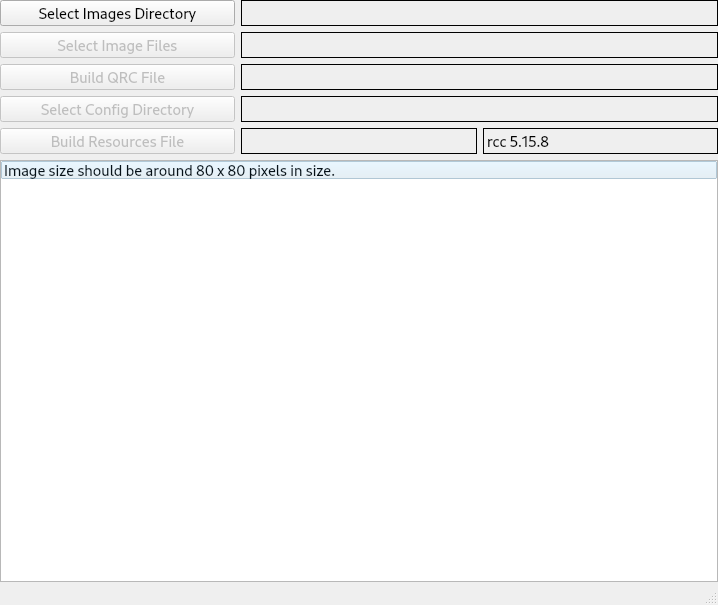
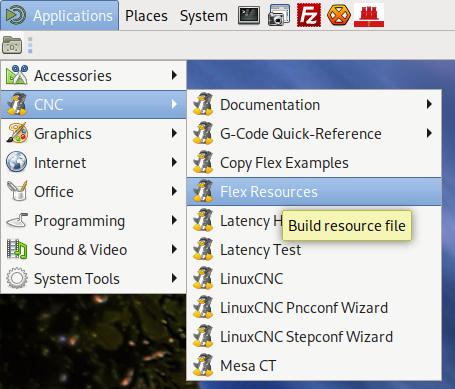
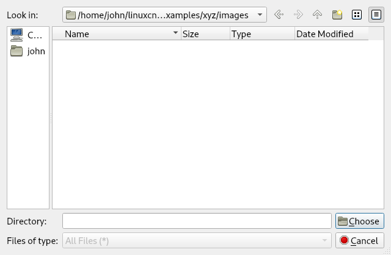
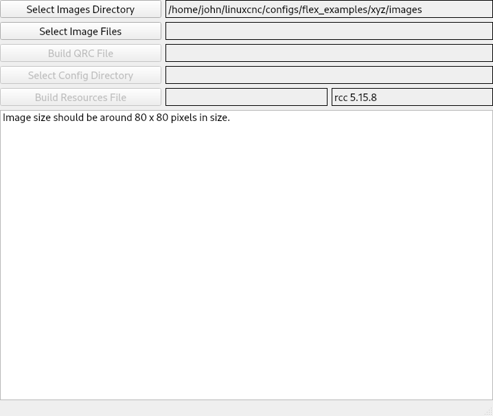
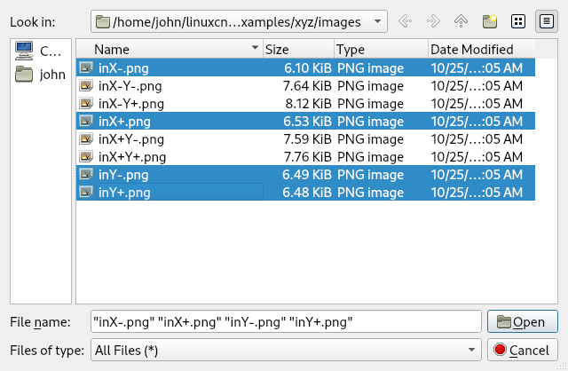
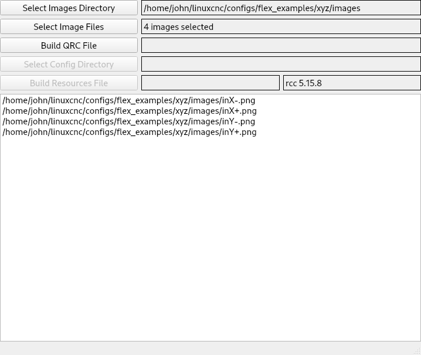
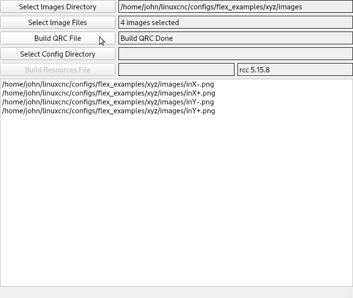
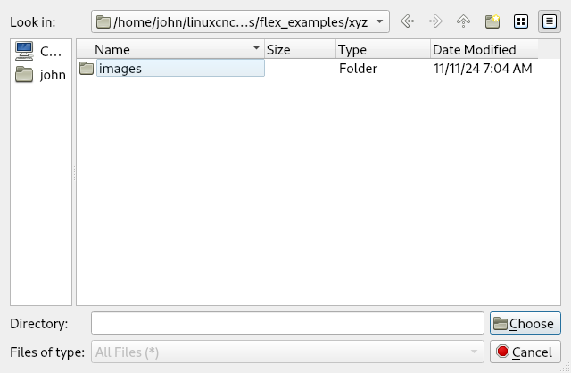
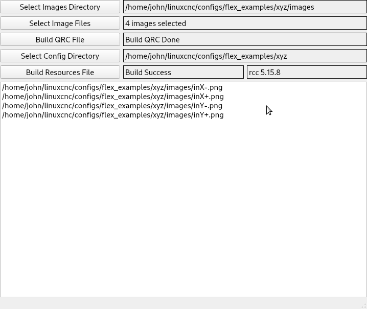
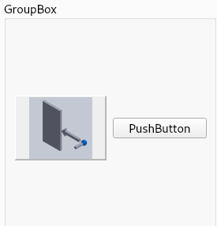

Resources¶
To create a resources.py file with images to use with the .qss stylesheet, start by placing all the images in a different directory than the configuration files. A subdirectory in the configuration directory is fine
└── configs
└── my_mill
└── images
Add the following library if not installed
sudo apt install qtbase5-dev-tools
After installing Flex GUI on the CNC menu run Flex Resources
Startup
Next Select Images Directory
The selected directory is shown in the label
Next Select Image Files. To select all the images left click on the first one and hold down the shift key and left click on the last one. To pick several images but not all hold down the ctrl key while you left click on each one.
The images selected are shown below
Next Build QRC File
Next Select Config Directory
Note
The Image directory and the configuration directory must be different
Next Build Resources File
The Flex Resource Builder can be closed now. In the configuration directory you will have a resources.py file that contains the images used by the stylesheet.
Next edit the ini file and in the [DISPLAY] section add the following line
RESOURCES = resources.py
In the [DISPLAY] section add the style sheet
QSS = xyz.qss
To add an image named my-image.png to a QPushButton with an object name of my_pb add the following to the qss file
QPushButton#my_pb {
min-height: 80px;
min-width: 80px;
margin: 2px;
background-position: center;
background-origin: content;
background-clip: padding;
background-repeat: no-repeat;
background-image: url(:my-image.png);
}
Now when you run the configuration the image will be on the QPushButton
Note
Delete any text in the QPushButton or it will be on top of the image